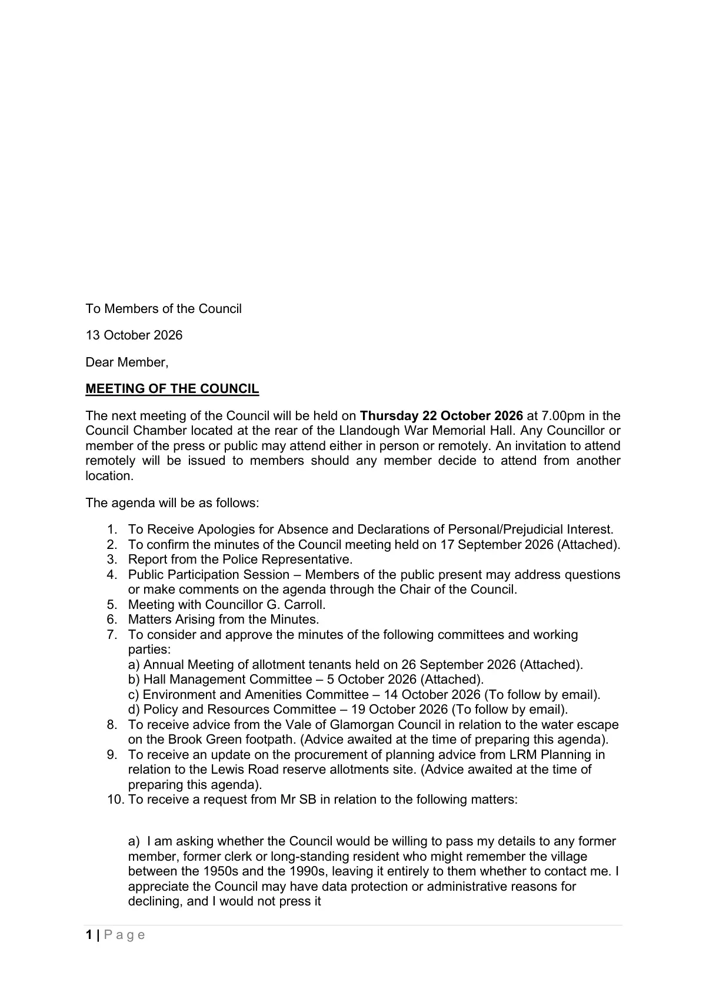

GHF-E106-R115-A1 other
2026-10-13_llandough-community-council_agenda-22-october-2026.pdf

Transcript
1 | P a g e To Members of the Council 13 October 2026 Dear Member, MEETING OF THE COUNCIL The next meeting of the Council will be held on Thursday 22 October 2026 at 7.00pm in the Council Chamber located at the rear of the Llandough War Memorial Hall. Any Councillor or member of the press or public may attend either in person or remotely. An invitation to attend remotely will be issued to members should any member decide to attend from another location. The agenda will be as follows: 1. To Receive Apologies for Absence and Declarations of Personal/Prejudicial Interest. 2. To confirm the minutes of the Council meeting held on 17 September 2026 (Attached). 3. Report from the Police Representative. 4. Public Participation Session – Members of the public present may address questions or make comments on the agenda through the Chair of the Council. 5. Meeting with Councillor G. Carroll. 6. Matters Arising from the Minutes. 7. To consider and approve the minutes of the following committees and working parties: a) Annual Meeting of allotment tenants held on 26 September 2026 (Attached). b) Hall Management Committee – 5 October 2026 (Attached).
Read more
c) Environment and Amenities Committee – 14 October 2026 (To follow by email). d) Policy and Resources Committee – 19 October 2026 (To follow by email). 8. To receive advice from the Vale of Glamorgan Council in relation to the water escape on the Brook Green footpath. (Advice awaited at the time of preparing this agenda). 9. To receive an update on the procurement of planning advice from LRM Planning in relation to the Lewis Road reserve allotments site. (Advice awaited at the time of preparing this agenda). 10. To receive a request from Mr SB in relation to the following matters: a) I am asking whether the Council would be willing to pass my details to any former member, former clerk or long-standing resident who might remember the village between the 1950s and the 1990s, leaving it entirely to them whether to contact me. I appreciate the Council may have data protection or administrative reasons for declining, and I would not press it 2 | P a g e b) Whether the Council would consider, in due course, whether an interpretation board or a plaque near the green would be appropriate. The excavation on the land beneath Church View Close recorded 1,026 burials, described in the published report as by far the largest early medieval burial population so far recovered from Wales, above a Roman villa and an Iron Age roundhouse. That history belongs to Llandough as much as to my family, and there is nothing on the ground that records it. I would be glad to give the Council or the community a short talk on the documentary record, without charge, if that would be useful. 11. To consider a request for a donation from Wales Air Ambulance. 12. To consider and approve the attached project plan relating to the creation of Llandough and Cwrtyrala Community Council for discussion with representatives of Michaelston and Leckwith Community Council (Attached). 13. To consider the draft Annual Remuneration Report for 2027-28 published by the Democracy and Boundary Commission Cymru (Closing date for comments is 17 December 2026 – Web-link: https://democracy- cymru.files.svdcdn.com/production/remuneration/Draft-annual-remuneration-report- 2027-28-E.pdf?dm=1790154648 14. Welsh Government Call for Evidence – Vision for Culture and Sport in Wales - https://www.gov.wales/vision-culture-and-sport-wales (Closing Date 18 December 2026) 15. Members who have attended meetings of other bodies and to consider matters to be referred to the Community Liaison Committee. (See report attached from Councillor Dr Mo Misra). 16. To receive correspondence not specifically referenced on the agenda (Decisions cannot be taken in relation to matters raised under this agenda item). 17. To approve the bank reconciliation for the month ended 30 September 2026 (Attached). 18. Examination and Payment of Accounts. (A schedule of payments made since 17 September 2026 will be e-mailed to members prior to the meeting). 19. Planning Applications Yours faithfully, Paul R. Egan Clerk to the Council MEMBERS OF THE PUBLIC AND THE PRESS CAN OBTAIN ANY DOCUMENTS REFERENCED ON THE AGENDA FROM THE CLERK PRIOR TO THE MEETING. HIS TELEPHONE NUMBER IS [phone redacted] OR E-MAIL [email redacted]. The Press and the Public can also attend the meeting either in person or on Zoom – access details for attending on Zoom can be obtained from the Clerk prior to the meeting.
Artifact description
Forwards a prior message regarding a full council meeting scheduled for 22 October.
| Catalogue ID | GHF-E106-R115-A1 |
|---|---|
| What it is | PDF document from Vale of Glamorgan Council (Scrutiny). Attached to an email received on 14 October 2026. 2 pages. |
| From | Vale of Glamorgan Council (Scrutiny) |
| Email received | 14 October 2026 |
| Their reference | none given |
| Pages | 2 |
| File | 2026-10-13_llandough-community-council_agenda-22-october-2026.pdf (90 KB) |
| State | Read |
Our integration
Part of the correspondence thread with Vale of Glamorgan Council (Scrutiny) opened 14 October 2026. The thread's standing classification is “no reply”. Statutory time: no statutory deadline.
Concern to test: whether this reply answers the question as asked, or a narrower one. Not checked against the original request wording here.
What cuts against the case: a covering letter, form or acknowledgement decides nothing either way; it is kept so the thread is complete.
Related: The covering email · EV-0482 in the evidence catalogue · Timeline · Disclosure Dartboard